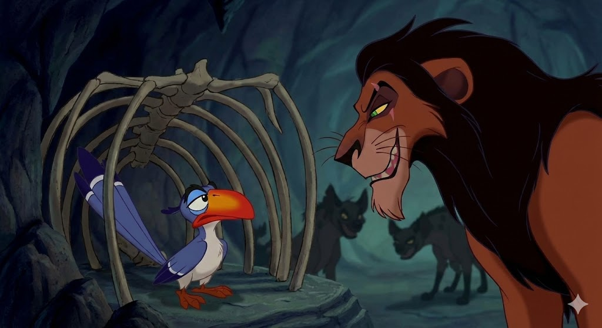

campaign שומר הסף וקביעת סדר היום
זאזו משמש כצינור המידע הבלעדי למלך מופאסה. ב"דיווח הבוקר", הוא מסנן את הידיעות ומחליט מה חשוב ("חדשות טובות") ומה שולי.
בתקשורת, תפקיד זה נקרא שומר סף. הוא שולט במידע כדי לשמר את הסדר הקיים ומונע מסימבה להגיע לאזורים ה"מסוכנים" (בית הקברות לפילים) שמייצגים את השוליים החברתיים.
visibility פיקוח חברתי ומעקב
כציפור בעלת מבט עילי (High Angle), זאזו משמש כ"עיניים של השלטון". הוא נשלח לעקוב אחרי הדור הצעיר ולוודא שהם פועלים לפי הנורמות המקובלות.
השיר "משגע להיות מלך" הוא בעצם מרד של הילדים כנגד הפיקוח והנוכחות המתמדת של נציג הממסד בחייהם הפרטיים.

lock_person צנזורה תחת משטר טוטליטרי
כאשר סקאר (הדיקטטור) עולה לשלטון, מעמדו של זאזו משתנה דרמטית. הוא מושם בכלוב (כלוב של צלעות) ומושתק.
זהו ייצוג חזותי לצנזורה והגבלת חופש העיתונות במשטרים לא דמוקרטיים. זאזו הופך מ"עיתונאי" משפיע ל"ליצן חצר" שתפקידו רק לבדר את השליט, ללא יכולת לבקר או לדווח אמת.